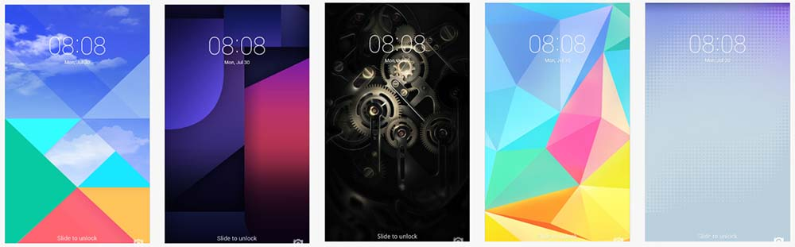
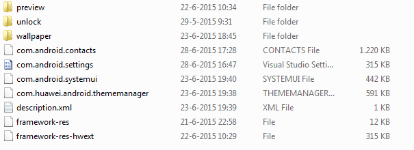
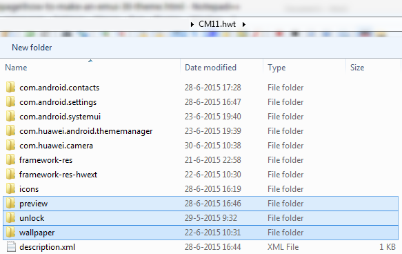

How to make an EMUI 3 theme
Last updated: 2016-03-20
One of the main features of EMUI is the possibility to theme the user interface extensively. This guide will explain the basics of making themes for EMUI 3 (3.0 and 3.1). EMUI 2 themes have the same structure, but the filenames may be different.
EMUI themes are distributed in the .hwt format. This format is nothing else than a ZIP file with a different extension. It's best to take a ready made .hwt theme and unzip it to see the structure. If you can't find one, download a sample theme here or download a theme using the Themes app on your Huawei/Honor device and find the .hwt file in /SDCard/HWThemes.
Getting started
First make sure you have all the tools required:
- XML editor (e.g. Notepad++)
- Archive program (e.g. 7-zip, WinRar)
- Image editor (e.g. Photoshop, GIMP)
Unzipping a .hwt file
To unzip the .hwt file, you can either rename the extension to .zip, or use a file archiver that can unzip it directly. This is what you will find inside:
 This is the content of an unzipped .hwt file.
Now you will see a lot of files without any extension (com.android.contacts etc.). These are also just zip files. Extract each of them to their own folder. In Windows you can't name a folder the same a a file, so it's best to move or delete the zipped files and then rename the folder to the original file names. You should end up with something like this.
 Example of 'build-folder' or source for a theme, this is what you get when you unzip every file in the .hwt archive. The selected folder aren not meant to be zipped, as well as description.xml. The other folders were zipped and renamed without extension.
For quick reference, see table 1 below:
| Name | Type | Description |
|---|---|---|
| com.android.contacts | File | Archive of contacts app theming data |
| com.android.incallui | File | Archive of dialer in call interface data |
| com.android.systemui | File | Archive of theming data for status bar and system popups |
| com.android.settings | File | Archive of settings app theming data |
| com.huawei.android.thememanager | File | Archive of Themes app theming data |
| framework-res | File | Contains xml for colour status bar notification texts and a few status bar icons |
| framework-res-hwext | File | Contains theming data for Huawei themed generic style: checkboxes, buttons, etc. and font colours |
| icons | File | Archive containing icons and icon masks |
description.xml | File | XML file containing information about the theme as displayed in the Themes app |
| preview | Folder | Contains preview images (as displayed in Themes app) |
| unlock | Folder | Contains lockscreen theme |
| wallpaper | Folder | Contains homescreen and lockscreen wallpapers |
.hwt theme
How to theme an app
Every individual app is in principle themed the same way. If you want to theme the status bar, most of it is in com.android.systemui. I will here use the settings app as an example.
Within the zip file/folder com.android.settings, you have two folders and one xml file.
/res
/drawable-xxhdpi
/
button_checked_focused.pngother image files
/drawable-xhdpi
/...
/
theme.xml/res
/drawable-xxhdpi
/
background_emui.png/drawable-xhdpi
...
/
theme.xml
com.android.systemui archive.
If you have ever decompiled or written Android apps, this will be familiar to you. The res folders contain image resources for the app such as buttons, backgrounds and icons. To theme this, simply replace the default image files with your own image files, but make sure they are the same dimensions, or will scale correctly. The drawable-xxhdpi folder is for full HD (1080x1920) devices for example, although strictly speaking the software screen density of the device determines what icon size is needed. For reference, see Android developer documentation.
It's convenient to use icons from other devices. Simply unzip SystemUI.apk to browse for icons. You may also encounter images ending on .9.png, these are so called 9-patch images. These images have a marker that allows scaling them correctly. If you replace these images with normal PNG files, they may look blurred and stretched.
The /res folder contains app-specific images and text labels, whereas the framework-res folder contains resources that are normally define system-wide, such as buttons and general text colours. It's not very clear which thing is defined through where, so use example themes or add stuff to both folders to be sure it works.
Text colours
The font colours for various text labels are defined by the theme.xml files. Below is a sample line from a theme.xml file:
<color name="emui_secondary_text_dark">#a5ffffff</color>theme.xml
For adjusting the text colour in apps, all tags are of the type color. Next we have name after which a label is given. This label will be used by the theme engine to set the appropriate text in the UI to the colour enclosed in the XML tag. The color is given as a HEX value. Normally HEX colours will be six letters long (e.g. #123abc), but you see that the example is eight characters long (excluding the #). The first two characters are to define the alpha value (opacity) on a scale of 00 (0%) to ff (100%). You may omit these characters and use standard 6 character colour codes, the theme engine will interpret this as 100% opacity. So #000000 is equivalent to #ff000000.
The other variable in the XML tags is the name. Unfortunately there is no good documentation on this (let alone documentation in English) and Huawei's software guys did not use logical naming, and some names even contain spelling errors. Therefore I can only recommend to use an existing theme that themes all labels. I used the 'Moral' theme.
I've made a start on documenting it, which you can find here.
Instructional video I found on Baidu, which shows which image resource element fits where in the UI. Note that this they make a theme for EMUI 2, so some stuff may have changed for EMUI 3.
Theming the lockscreen
The lockscreen layout and icons are stored in the folder unlock. In the subfolder layout-hdpi you will find the file layout1.xml. In this file you can set the position of various lockscreen items (clock, date, notifications, unlock slider). Click here for an example. Also make sure to watch this video if you're serious about theming the lockscreen:
Instructional video I found on Baidu, explaining how to theme the lockscreen.
Changing the font
Chaning the font is very easy. You need to do two things:
- Add a folder with the name
fontsin the root of your theme and copy the font files to it. - In
description.xmladd the lines for your font:
<font>Your Font Name</font>
<font-cn>Your Font Name</font-cn>As for the font files, I know that ttf (TrueType) fonts work, not sure about OpenType fonts. Add the font files for your preferred bold, italic, Chinese style fonts to the folder fonts and rename them to the Android default font names: Roboto-Bold, Roboto-BoldItalic, Roboto-Italic, Roboto-Light, Roboto-LightItalic, Roboto-Regular, Roboto-Thin, Roboto-ThinItalic, etc. If you do not have all these different styles for your font of choice, just add and name the ones you have, or, to replace multiple font styles with the same theme font, copy and rename multiple times.
Finally, you can add a preview picture of the font by placing a jpg file with the name pic_font_default.jpg in the fonts folder (so not in the preview folder!).